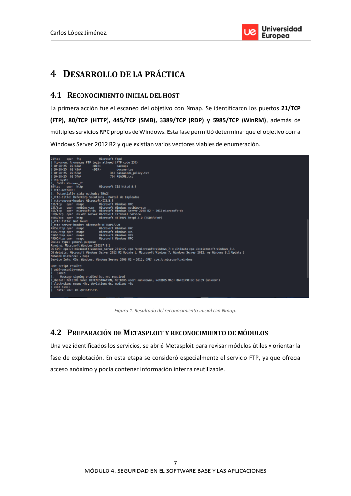
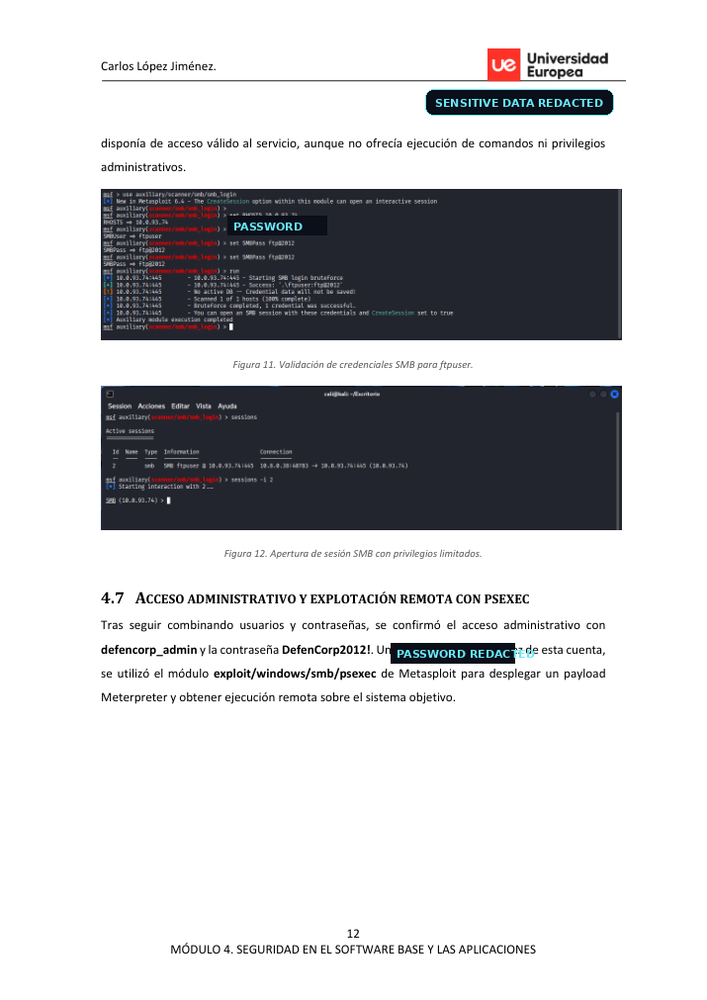

Executive summary
El laboratorio demuestra cómo una exposición aparentemente básica en FTP puede convertirse en compromiso completo al combinar documentos internos, credenciales débiles, reutilización de contraseñas y servicios administrativos accesibles.
Attack path
Se parte de la enumeración de puertos y servicios. El FTP anónimo permite recuperar políticas de contraseña y pistas de reutilización. La web proporciona usuarios internos. La validación por SMB identifica una cuenta administrativa y Metasploit psexec obtiene ejecución remota.
Recruiter signal
Refleja razonamiento ofensivo real: no depender de un CVE concreto, sino construir una cadena a partir de exposición de información, validación y explotación controlada.
Command notebook
Comandos representativos del laboratorio. Los valores sensibles se han sustituido por placeholders.
nmap -sC -sV -p- <target> ftp <target> # anonymous login use auxiliary/scanner/smb/smb_login set SMBUser <user> && set SMBPass <password-redacted> use exploit/windows/smb/psexec sessions -i <id>
Pasos resumidos con evidencias
Reconocimiento del host
Nmap identifica FTP, HTTP, SMB, RDP y WinRM en Windows Server 2012 R2.
Enumeración FTP
Acceso anonymous al FTP para revisar archivos internos expuestos.
Recuperación de pistas
Archivos internos muestran política de contraseñas débiles y reutilización en SMB/WMI.
Enumeración web
Portal de empleados permite construir una lista de usuarios internos.
Validación SMB
Metasploit smb_login confirma credenciales válidas primero con acceso limitado y después administrativo.
Ejecución remota
Uso controlado de psexec para obtener una sesión Meterpreter.
Verificación y mitigación
Confirmación del compromiso y recomendaciones sobre FTP, contraseñas y SMB.
Key findings
Anonymous FTP leaked internal files.
Impacto técnico identificado y validado durante el laboratorio. En una evaluación real se priorizaría por criticidad, explotabilidad y alcance.
Passwords were weak and reused across remote access services.
Impacto técnico identificado y validado durante el laboratorio. En una evaluación real se priorizaría por criticidad, explotabilidad y alcance.
An administrative SMB account enabled full system compromise.
Impacto técnico identificado y validado durante el laboratorio. En una evaluación real se priorizaría por criticidad, explotabilidad y alcance.
Visual evidence


Remediation notes
- Disable anonymous FTP and review exposed files.
- Enforce strong password policy and credential separation.
- Limit SMB administration paths and monitor psexec-like behavior.